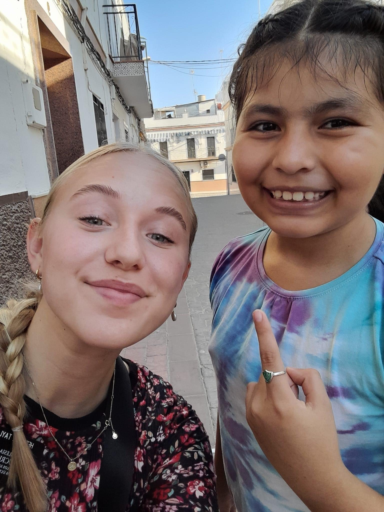
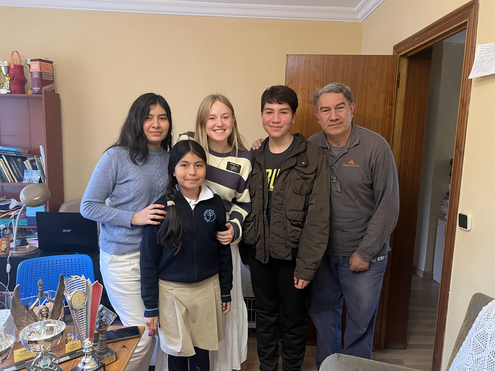
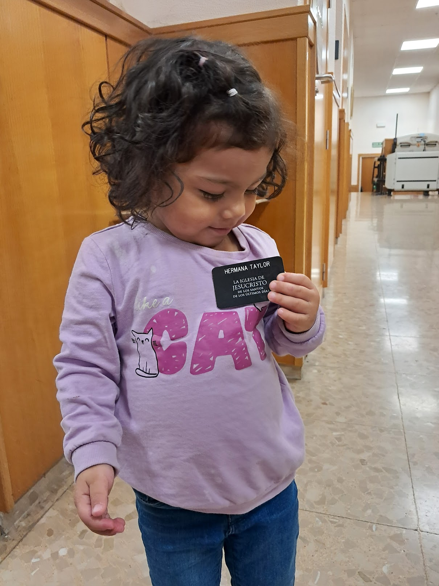
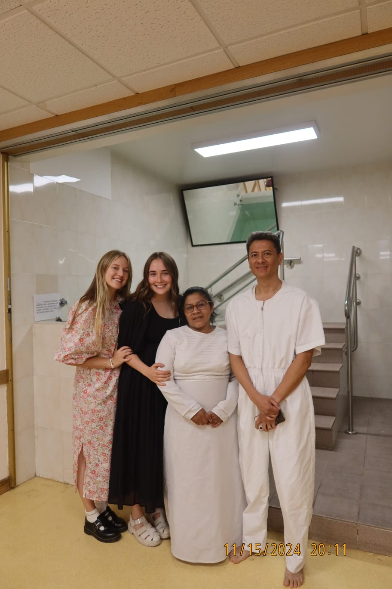

Top 3 Things I Learned
- Service and Sacrifice
- Waking up early to serve others
- Learning to put others first
- Faith and Resilience
- Handling rejection with grace
- Staying strong through trials
- Love for the People
- Understanding Spanish culture
- Building lifelong friendships
Favorite Mission Photos 📸
   Walking through a little part of my Mission
Interactive Graph 📊
This Tableau graph shows daily temperatures in Spain during 2019 — a great glimpse of what it felt like during my mission!